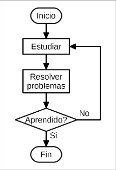
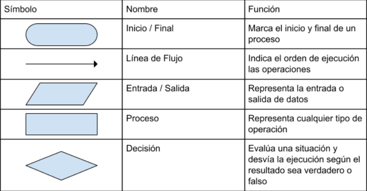
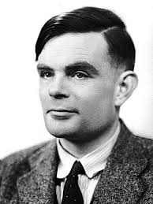
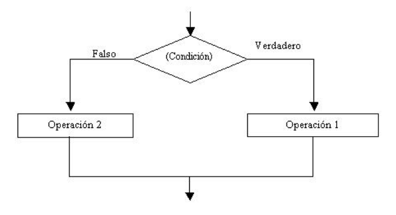
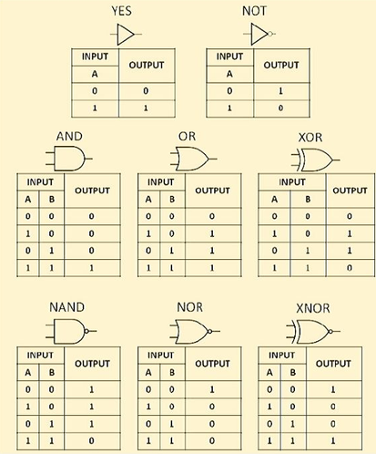
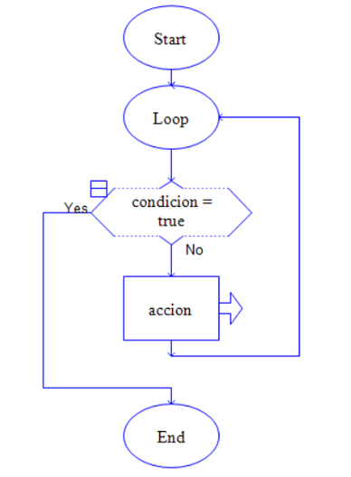
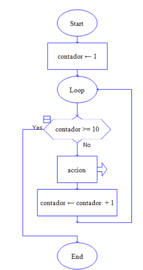

Lección 0
Programación
La programación consiste en organizar una secuencia de pasos ordenados a seguir para hacer cierta cosa. En el contexto de la informática, implica escribir instrucciones para que una computadora las ejecute una tras otra
Algoritmos y lógica
Algoritmo se refiere a “conjunto ordenado y finito de operaciones que permite hallar
la solución de un problema” (Real Academia Española, s.f., definición 1).
Lógica se refiere a “Ciencia que expone las leyes, modos y formas de las
proposiciones en relación con su verdad o falsedad.” (Real Academia Española, s.f.,
definición 6).
En la programación creamos algoritmos para dar solución a problemas. Los
algoritmos siguen una lógica para funcionar.
Características de la lógica de la programación
- Pensamiento ordenado: Los algoritmos se escriben y ejecutan en una secuencia ordenada.
- Base Universal: Resolución de problemas: Está hecha para facilitar la capacidad de la computadora de ejecutar acciones.
- Resolución de problemas: Está hecha para facilitar la capacidad de la computadora de ejecutar acciones.
La programación se rige por el uso de estructuras de datos, condicionales y repeticiones principalmente.
diagramas de flujo
Un diagrama de flujo es una representación gráfica de un algoritmo o proceso. Compuesto de recuadros que tienen una acción definida.
El diagrama de flujo se sigue a través de las flechas,
llamadas líneas de flujo, separan una acción tras otra y se
pueden desviar o regresar
a acciones anteriores, siempre y
cuando se siga la dirección en la que apuntan.

elementos del diagrama de flujo

Manejo de Datos
La programación se desarrolló con el propósito principal de manejar valores y datos automáticamente, para omitir procesos manuales.
Alan Turing, padre de la informática, sentó las bases para la primera computadora programable. Si bien no la creó, su trabajo para descifrar enigma, un método de encriptación de mensajes utilizado por los alemanes en la Segunda Guerra Mundial siguió ese propósito de la programación.
En su momento, el trabajo de los criptógrafos se hacía enteramente a lápiz y papel, hasta que él inventó una máquina gigantesca, que ayudó a romper la encriptación, siendo los datos los mensajes de los alemanes.

Alan Turing
Condiciones
Un recurso fundamental en la programación es el uso de condiciones y compuertas lógicas. Esto es, que una instrucción se ejecute cuando algo se cumpla, y combinar condiciones de diferente manera.
Las condiciones realizan una instrucción si son verdaderas, y pueden omitirse o realizar algo diferente si son falsas.

Compuertas lógicas
Además de analizar condiciones, estas se pueden comparar una con una a través de operadores lógicos, como los siguientes:
- OR: Si una de las dos se cumple, true.
- AND: Si ambas se cumplen, true.
- NOT: Opuesto (true = false, false = true).
- NOR: Si una de las dos se cumple, false.
- NAND: Si ambas se cumplen, false
- XOR: Si son iguales (true & true, false & false), false.
- XNOR: Si son iguales (true & true, false & false), true.
Todo esto se da a entender mejor en las llamadas tablas de verdad:

Notemos también la manera en la cual se representan graficamente.
Prácticamente toda la programación se basa en cosas que se cumplen o no, ya que, a nivel de hardware, un cable o un transistor de computadora solo puede estar encendido o apagado; es decir, true o false.
Repeticiones
Otro aspecto importante de los algoritmos es que, si realizan la misma acción múltiples veces, es conveniente programar un ciclo o repetición, para omitir escribir las instrucciones muchísimas veces. Los ciclos se rigen por condiciones; de manera que se repiten siempre y cuando… o se repiten una cantidad de veces.
Se puede usar una condicional que simplemente evalúe si es verdadera o falsa, o utilizar un contador para hacerlo cierta cantidad de veces. Esto se le llama bucle while y bucle for respectivamente.


Representación visual de bucle while y for, respectivamente.